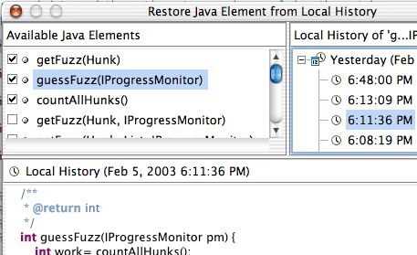
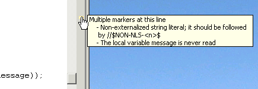
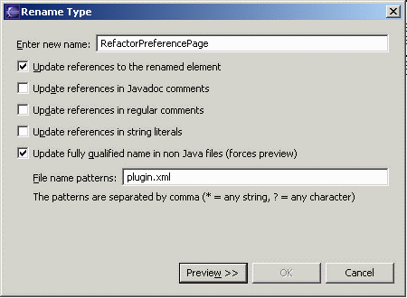
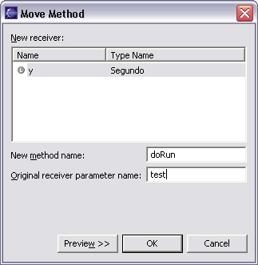
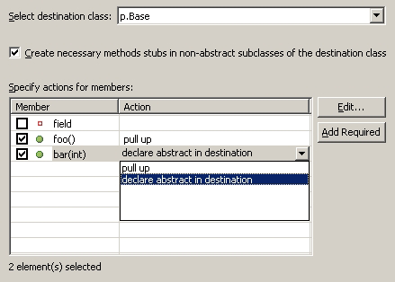
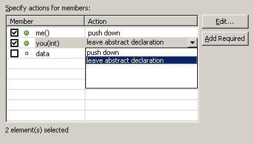

|
| Code assist |
Hit CTRL+SPACE in the Java
editor to ask for suggestions for how to finish what you're typing.

|
| Code assist on anonymous
classes |
Code assist gives help when
creating an anonymous class. Invoke Code Assist (CTRL + SPACE) after the
opening bracket of the class instance creation
(screenshot) Runnable runnable= new Runnable( |
| Quick create a new method |
Altough there is no 'New method'
wizard there are many ways to create methods.
- Override or implement methods from base classes using the 'Override
/ Implement Methods' action, Code Assist (between
methods) or Quick Fix (On an error for unimplemented methods)
- Create delegate methods, setters and getters using the
corresponding actions in in the source or context menu
- Use Drag & Drop or Copy / Paste to start with a copy of an
existing method
- Define a new template (Preferences > Java > Editor >
Templates) containing a method stub. Templates are shown
together with the Code Assist (CTRL + SPACE) proposals
- Start with the method invocation and use Quick Fix (CTRL + 1)
to create the method.
(screenshot of call to missing method)
|
| Add methods that override |
To create a method that
overrides a method from a base class
- Select the type to add the methods to and invoke 'Override /
Implement Methods', from the source or context menu. This opens
a dialog that lets you choose which methods to override.
- Invoke Code Assist (CTRL + SPACE) in the type body at the
place where the method should be added. Code assist will offer all
methods that can be overwritten
- To implement a new interface, add the 'implements' declaration
first to the type. Without the need to save or build, the Java
editor will underline the type to signal that methods are missing
and show the Quick fix light bulb. Click on the light bulb or press CTRL
+ 1 (Edit > Quick Fix) to choose between adding the
unimplemented methods or making your class abstract.
|
| Local rename |
To quickly do a rename that
doesn't require the full analysis on dependencies in other files use the
'local rename' quick assist.
In the Java Editor, position the cursor in an identifier of a variable,
method or type and press Ctrl+1 (Edit > Quick Fix)
The editor is switched to the linked edit mode (like templates) and
changing the identifier simultaneously changes all other references to
that variable, method or type.
(picture).
|
| Support for exceptions |
Dealing with throw exceptions is made easy.
Unhandled exceptions are detected while typing and marked with a red
line in the editor.
- Click on the light bulb or press CTRL + 1 to surround the call
with a try catch block. If you want to include more statements in
the try block, select the statements and use (Source >
Surround With try/catch Block).
- Use Edit > Expand Selection to > Enclosing / Next /
Previous to select statements
- If the call is already surrounded with a try block quick fix will
suggest to add the catch block to the existing.
- If you don't want to handle the exception, let quick fix add a new
thrown exception to the enclosing method declaration
At any time you can convert a catch block to a thrown exception. Use
Ctrl+1 (Edit > Quick Fix) on a catch block
|
| Less typing for assignments |
Instead of typing an assignment, start with
the expression that will be assigned.
vector.iterator();
Now use Ctrl+1 (Edit > Quick Fix) and choose 'Assign
expression to local variable' and a Quick assist will guess a
variable name for you.
Iterator iterator= vector.iterator();
|
| Reminders in your Java code |
When you tag a comment in Java
source code with "TODO" the Java compiler automatically
creates a corresponding task as a visible reminder. Opening the task
navigates you back to your that place in the code. Use the Java >
Task Tags preference page to configure any other special tags (like
"FIXME") that you'd like to be reminded of.

|
| Non-shared project filter
for Package Explorer and Project views |
There is a filter for excluding
non-shared projects from Package Explorer and Projects view:

|
| Find out where a variable is
read and written |
Select an identifier (variable,
method or type reference or declaration) and invoke Search >
Occurences in File. This marks all other references of this
identifier in the same file and also shows the result in the search
view. Very convenient: The entry image show if it is a read or write
access.
For searches over all files use the standard search features (Search
> References) ect.

|
| Special end character for
patterns in Open and Go To dialogs |
The various Open and Go
To dialogs now support the end character '<'. So if you want to
see all types in the Open Type dialog that end with
"Test" you have to enter the pattern "*Test<". If
'<' is not present in the pattern, a '*' is appended to the pattern.
So entering "*Test" in the Open Type dialog shows all
types containing "Test" somewhere in the type name. |
| Use the local history to get
back removed methods |
Don't forget that all previous
contents of your files are kept in the local history. Select a element
and use 'Replace With > Local History' to reert back to a
previous editons of the element.
To restore removed members use Restore From Local History.

|
| Type hierarchy view supports
grouping by defining type |
The type hierarchy method view
lets you sort the selected type's methods by their defining type. For
example, for AbstractList you can see that it contains method that were
defined in Object, Collection and List:

|
| Find out where a method is
implemented in the hierarchy |
To get a understanding which
types in a hierarchy override a method use the 'Show Members in
Hierarchy' feature.
- Select the method to look at and press F4 (Navigate > Open
Type Hierarchy). This opens the type hierarchy view on the
method's declaring type.
- With the method selected in the Hierarchy view, press the 'Lock
View and Show Members in Hierarchy' toolbar button
- The hierarchy view now shows only types that implement or define
the 'locked' method. You can for example see that 'isEmpty()' is
defined in 'List' and implemented in 'ArrayList' and 'Vector' but
not in 'AbstractList'
(screenshot: TH on List, isEmpty in lock) |
| Define prefixes or suffixes
for fields, parameters and local variables |
In addition to configuring the
prefix or suffix for fields, you can also specify the prefix or suffix
for static fields, parameters, and local variables. These settings on
the Java > Code Generation preference page are used in code
assist, quick fix, and refactoring whenever a variable name needs to be
computed.

|
| Customizable code generation |
The Java > Code Generation
preference page allows you to customize generated code and comments in a
similar way that normal templates are defined. These code templates are
used whenever code is generated. (The comments replace the existing 'filecomment'
and 'typecomment' templates used for code generation.)

The check box 'Automatically add comments' lets you decide if
features that create new methods or types also add comments
automatically or if you only want to have comments added when you do
this explicitly with 'Add Javadoc Comment'
|
| Sort members |
There is now a Sort Members
action on the context menu of Java compilation units and top level types
that rearranges the members of a compilation unit according to the
category order defined in the Java > Appearance > Member Sort
Order preference page. |
| Keep your code in shape |
The Java compiler detects
unreachable code, unused variables, parameters, imports and unused
private types, methods and fields
The setting is on the Java > Compiler preference page.

All these settings are also detected as you type and a quick fix is
offered to remove the unneeded code.
|
| JUnit |
Select a JUnit test method in a
view and choose Run > Run As > JUnit test. This creates a
launch configuration to run the selected test. |
| Hierarchical vs. flat layout
of packages |
An option on the Java Packages
(and Package Explorer) view allows you to change the way packages are
displayed. Hierarchical displays packages in a tree, with
subpackages below packages; Flat displays them as the traditional
way, as a flat list where all packages and subpackages as siblings. |
| Logical packages |
The Java Packages view (Java
Browsing perspective) coalesces packages of the same name across source
folders within a project. This presents a view of a logical package. |
| In-place outlines |
Press Ctrl+F3 (Navigate >
Open Structure) in the Java editor to pop up an in-place outline of
the element at the current cursor position. Or press Ctrl+O (Edit
> Open Structure) to pop up an in-place outline of the current
source file.

|
| Hover information in editor
overview |
The Java editor's right hand
side overview ruler now shows hover information for problem annotations.

|
| Refactoring can update
non-Java files |
When renaming a Java type or
package (or when moving a type to a different package), the fully
qualified name of the element can now be updated in non-Java files as
well.

|
| Move instance method
refactoring |
You can select an instance
method and select Move from the context menu. It allows you to
move the method to the declared class of one of the method's parameters,
or to the declared class of a field. This creates a new method and
converts the old method into a delegate (passing it 'this' if
necessary).

|
| Pull Up refactoring |
Use the Pull-Up refactoring to move methods and fields in the
declaring type's hierarchy.
- Members can be pulled up more than 1 level in the class hierarchy.
- Instead of pulling methods up you can choose to declare them
abstract in the destination class. This will add method stubs to all
non-abstract subclasses of the destination class if required.
- By pressing Add Required you can compute the set of all
members that are required to be pulled up together with those
already selected.

|
| Push Down refactoring |
Select a set of non-static methods and fields declared in a class and
choose Refactor > Push Down. For each of the methods and
fields you can then choose if you want to either:
- push it down to subclasses, or
- (in the case of methods) push it down to subclasses and declare an
abstract method in the class that currently declares the method, or
- leave it as is

|